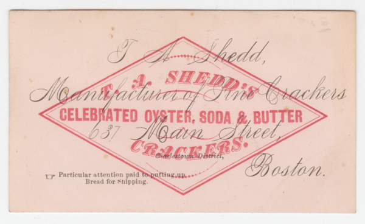
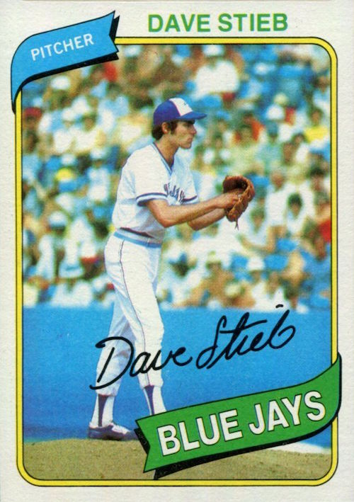

During the isolation period of Covid–19, boredom was inevitable among most people. Being very limited of what one can do during isolation or within a Stay At Home order, a hobby gained a surge of interest which also reignited an custom people may have done when they were young: Collecting Trading Cards.
What Does it Mean to Collect Cards?
The concept of collecting trading cards can vary from one person to another, a general concept can be described as the act of collecting cards towards a personal collection. Almost every card game can be collected for one&apos:s personal interest, one prime example being baseball trading cards. Some cards are either solely for trade and collection or can be used for play, with card games such as Pokémon and Yu–Gi–Oh!
How Card Collecting Began
Trading cards were started aroud the late 1800s as a means of advertisement, such as for Coca–Cola promotions. This introducion of marketing promotion was to entice its customers, or attarct new ones, towards product consumption, as the card was decorated with a bright image accompanied by the logo of the company and a company image. Also around the 1860s baseball became a popular sport in the Americas, and soon after baseball cards were printed. During those years collecting cards became popular for its time and subsided a bit near the 1900s.
When baseball cards were being printed, they were usually included with bubble gum. Along with the commerical use of cards the companies that focused on baseball products then made the cards more appealing, by adding the image of the players and then a small biography on the back of the card. In the 1950s, Tops Chewing Gum Inc. produced these cards along with their products and eventually printed the cards alone in packs of bundles. In the 1980s the value of collecting cards grew and companies printed more to meet demand, but had a backlash as the value of the cards became worthless due to overprinting. They then regulated the volume of what cards are printed to produce a sense of scarcity, giving the cards value for their time, but unbeknowingly, for the future.
Expanding from Baseball Cards
Approaching the 2000s the hobby of collecting took a new turn as the cards people would collect would be introduced into playability as a game. This gave birth the Trading Card Game, starting with Magic: The Gathering, a turn based game where two players fight eachother using the resources from their cards, known as a deck, as well as their knowledge of their cards and interactions each card gives when played. This introduced card playability along with the concept of collectibiliy as Magic: The Gathering includes card rarities and limited edition printings.
Along with Magic, more trading card games were created in the 90s and the years later on, such as Pokémon, Yu–Gi–Oh!, Game of Thrones: The Card Game, Digimon Card Game, Keyforge, and many more. These new cards and card games entering the genre of a collecting made the hobby a thriving past time for those who have interest in the hobby.
Examples of Trading Card Games
Ever since 1990, many trading card games emerged, and most succeed and some fail. Here will be a small list of Card Games and also Collectable Cards people often pick up as a hobby:
Topps Baseball Cards
Topps, or also know as Topps Gum, was among the other companies to include collectable cards with their product. Their main product being chewing gum, had cards with images of the baseball players from various teams. Over the years Topps Gum became Topps, and shifted towards a collectable company to produce trading cards of the current sport. Many other companies followed suit for other sports such as basketball, hockey, and football.
Pokémon
Pokemon trading card game was created in 1998, a derivation of the popular video game version. The card game has two players use their decks consisting of pocket monsters, or Pokémon for short, to battle in a turn based strategy. Along with the pokémon used in their deck, support items and support characters can be played to give the player an advantage towards defeating the opponent.
Yu–Gi–Oh!
Yu–Gi–Oh! was released in 1999 and it is turn based game that has players ranging from one to four to battle, or duel, against eachother using the cards in their decks. The decks usually contain monsters, spells, and trap cards to help them beat their opponent. This game also comes with a secondary deck, containing up to 15 special monsters that use a special condition to play them.
Digimon Card Game
Digmon card game was released at the start of 2021, having players play against each other using the digital monsters, or Digimon. There are 2 decks, one for the main cards such as option cards, digimon, and digimon tamers, and another deck for digimon eggs. The main deck has 50 cards while the egg deck has 5 cards. Players can evolve their digimon into stronger versions to attack to the opposing player's digimon.
KeyForge
Keyforge was released in 2018 and has two players and have the players play a role to gather special keys. The player will take the role of an Archon and their deck consists of a team needed to gather these keys. Once a player gathers three keys and uses them to open a vault win the game.
Dragon Ball Super Card Game
Dragon Ball Super card game was launched in 2017 and is a table top game having two players use a leader card, alsong with unison,battle, and extra cards to defeat their opponent. It was relaunched in 2017 with new cards and strategies. The characters depicted are from the Animated Series Dragon Ball
Magic: The Gathering
Magic was released in 1993 and it was the first iteration of the trading card game. The player has a deck containing summonable monsters, spells, and strategically use their knowledge to beat the opponnent. This trading card game could be said to be the pioneer of trading card games.